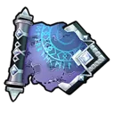

Mapa secreto de platina
Feitiço · Tier 13 · Nível 40
Mapa dos reinos subterrâneos, feito em platina. Belo e indestrutível, pode levar a ruínas com riquezas inimagináveis.
Atributos
Ataque
1.520
Economia
Valor
14.450.000
Tempo de fabricação
1d 14h
XP do comerciante
275.000
Trabalhadores: Feiticeiro 34, Herborista 30, Sacerdotisa 27
Receita


Marcos do projeto
4
Tempo de fabricação -20%
10
-29 Óleo
18
-134 Ervas
30
Chance de qualidade +1
45
Valor +25%